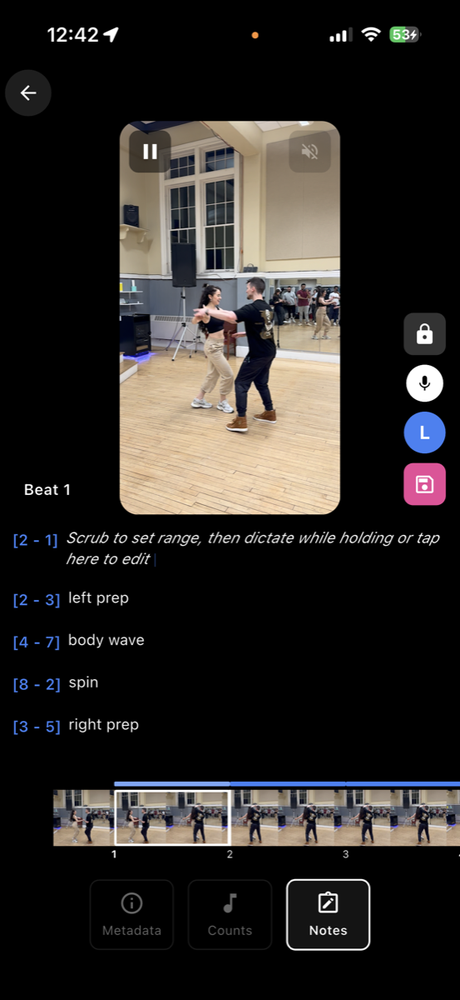
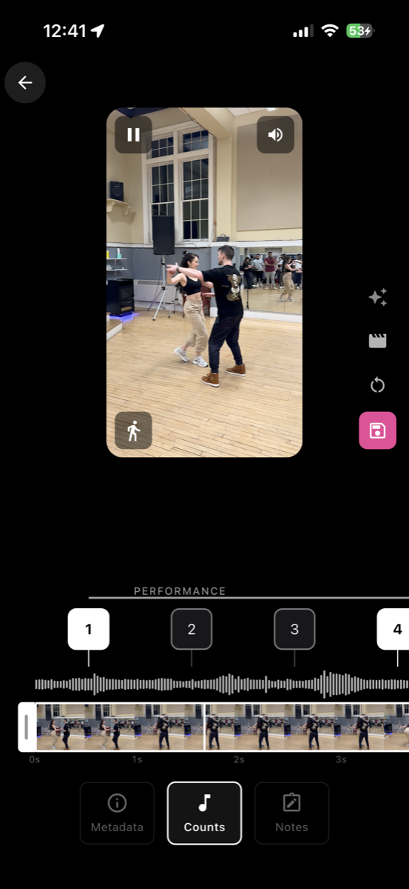
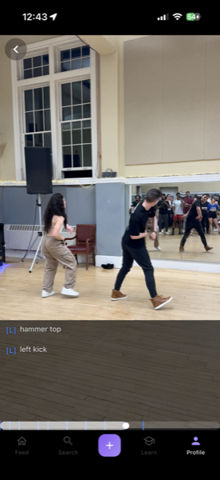
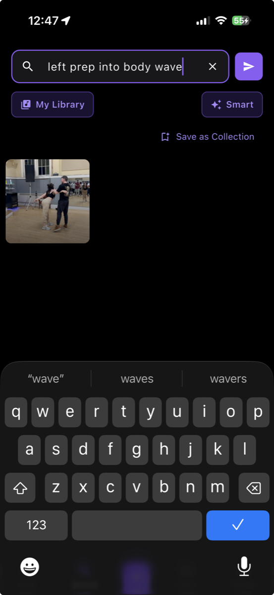
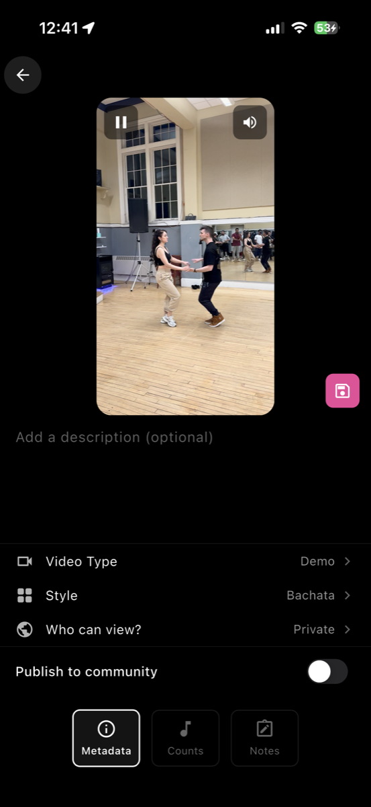

What it does
DanceVault is for dancers who want to capture moves once and drill them forever. Record or import short clips, anchor notes to specific beats, organize into collections, and play them back with metronome-aligned counts.
-
Capture & organize videos
Record or import; group into collections; lock private.
-

Tag videos with notes
Anchor notes to specific moments and beat ranges.
-

Assign beat counts
Map measure-aware counts so playback aligns with the music.
-

Synchronized note view
During playback, notes scroll in lockstep with the video.
-

Smart search
Find moves across your library by description or tag.
-

Publish & share
Push videos public or keep them private to your library.
Plus more:
- Practice mode w/ metronome
- Voice dictation
- AI coach chat
- Social feed
- Learn mode
- Profile
- Push notifications
- Offline mode
The stack
Real backend, not just mocks. Eight integrated services, server-signed uploads, offline-capable from day one.
- Flutter
- Dart
- Riverpod
- GoRouter
- Freezed
- Supabase
- PowerSync
- Postgres
- Cloudflare R2
- Coconut
- Gemini
- Deepgram
- FFmpeg
Engineering highlights
-
Offline-first sync (PowerSync ↔ Postgres ↔ SQLite)
Set up a dedicated
powersync_rolewith idempotent grants tracked as migrations, configured logical replication between Supabase Postgres and the on-device SQLite, and shaped sync rules so videos, collections, spans, and notes all work offline and reconcile on reconnect.Tricky bit: replication-role permissions, RLS interaction, and ensuring the local schema stayed tightly coupled to the server schema.
-
AI dictation with an arbiter pattern (Deepgram)
The
deepgram-tokenedge function mints short-lived tokens so the Flutter app streams audio directly to Deepgram. A custom arbiter decides when to promote partial transcripts into the underlying text field — building a genericDictatableTextFieldany surface (notes, descriptions) can adopt.Tricky bit: overlapping partials, span anchoring, and not blowing away in-progress edits.
-
Server-signed video uploads (R2 + edge function)
Started with client-signed S3 URLs, then refactored: an
r2-uploadedge function signs presigned URLs server-side and enforcesassertKeyOwnedByCallerso a user can only write to their own keyspace.Tricky bit: the SigV4 canonical query string must be sorted by ASCII bytes, not locale — caught with a unit test after a quietly-broken signature.
-
AI coach agent (Gemini)
An
ai-agentedge function wraps Google AI Studio's Gemini for coach-style sessions. Agent sessions persist in Postgres, video metadata feeds in for context, and the chat surface lives natively inside the app.Tricky bit: session-aware prompting, streaming responses through the edge function, and graceful auth-token handling with
verify_jwt = falseinconfig.toml.
Get in touch
- Emailpequnio3@gmail.com
- LinkedInlinkedin.com/in/blake-c
- GitHubgithub.com/pequnio3
Source code is private during active development. Happy to walk through it on request.